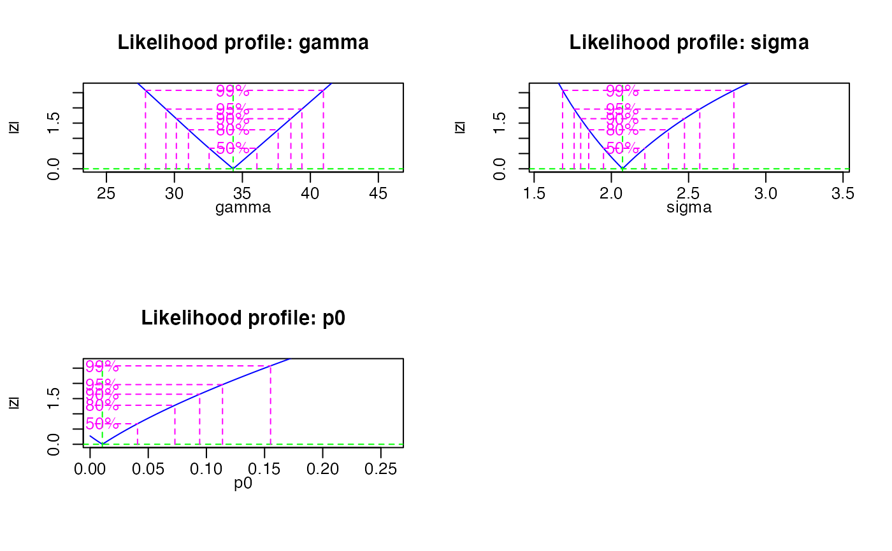

R/calc_MinDose.R
calc_MinDose.RdFunction to fit the (un-)logged three or four parameter minimum dose model (MAM-3/4) to De data.
calc_MinDose(
data,
sigmab,
log = TRUE,
par = 3,
bootstrap = FALSE,
init.values,
level = 0.95,
log.output = FALSE,
plot = TRUE,
multicore = FALSE,
...
)RLum.Results or data.frame (required):
for data.frame: two columns with De (data[ ,1]) and De error (data[ ,2]).
numeric (required):
additional spread in De values.
This value represents the expected overdispersion in the data should the sample be
well-bleached (Cunningham & Walling 2012, p. 100).
NOTE: For the logged model (log = TRUE) this value must be
a fraction, e.g. 0.2 (= 20 \
sigmab must be provided in the same absolute units of the De values (seconds or Gray).
See details.
logical (with default): fit the (un-)logged minimum dose model to De data.
numeric (with default):
apply the 3- or 4-parameter minimum age model (par=3 or par=4). The MAM-3 is
used by default.
logical (with default): apply the recycled bootstrap approach of Cunningham & Wallinga (2012).
numeric (optional):
a named list with starting values for gamma, sigma, p0 and mu
(e.g. list(gamma=100, sigma=1.5, p0=0.1, mu=100)). If no values are provided reasonable values
are tried to be estimated from the data. NOTE that the initial values must always be given
in the absolute units. The the logged model is applied (log = TRUE), the provided init.values
are automatically log transformed.
logical (with default): the confidence level required (defaults to 0.95).
logical (with default):
If TRUE the console output will also show the logged values of the final parameter estimates
and confidence intervals (only applicable if log = TRUE).
logical (with default):
plot output (TRUE/FALSE)
logical (with default):
enable parallel computation of the bootstrap by creating a multicore SNOW cluster. Depending
on the number of available logical CPU cores this may drastically reduce
the computation time. Note that this option is highly experimental and may not
work on all machines. (TRUE/FALSE)
(optional) further arguments for bootstrapping
(bs.M, bs.N, bs.h, sigmab.sd). See details for their usage.
Further arguments are
verbose to de-/activate console output (logical),
debug for extended console output (logical) and
cores (integer) to manually specify the number of cores to be used when multicore=TRUE.
Returns a plot (optional) and terminal output. In addition an RLum.Results object is returned containing the following elements:
data.frame summary of all relevant model results.
data.frame original input data
list used arguments
call the function call
mle2 object containing the maximum log likelihood functions for all parameters
numeric BIC score
data.frame confidence intervals for all parameters
profile.mle2 the log likelihood profiles
list bootstrap results
The output should be accessed using the function get_RLum
Parameters
This model has four parameters:
gamma: | minimum dose on the log scale |
mu: | mean of the non-truncated normal distribution |
sigma: | spread in ages above the minimum |
p0: | proportion of grains at gamma |
If par=3 (default) the 3-parameter minimum age model is applied,
where gamma=mu. For par=4 the 4-parameter model is applied instead.
(Un-)logged model
In the original version of the minimum dose model, the basic data are the natural
logarithms of the De estimates and relative standard errors of the De
estimates. The value for sigmab must be provided as a ratio
(e.g, 0.2 for 20 \
If log=FALSE, the modified un-logged model will be applied instead. This
has essentially the same form as the original version. gamma and
sigma are in Gy and gamma becomes the minimum true dose in the
population.
Note that the un-logged model requires sigmab to be in the same
absolute unit as the provided De values (seconds or Gray).
While the original (logged) version of the minimum dose model may be appropriate for most samples (i.e. De distributions), the modified (un-logged) version is specially designed for modern-age and young samples containing negative, zero or near-zero De estimates (Arnold et al. 2009, p. 323).
Initial values & boundaries
The log likelihood calculations use the nlminb function for box-constrained
optimisation using PORT routines. Accordingly, initial values for the four
parameters can be specified via init.values. If no values are
provided for init.values reasonable starting values are estimated
from the input data. If the final estimates of gamma, mu,
sigma and p0 are totally off target, consider providing custom
starting values via init.values.
In contrast to previous versions of this function the boundaries for the
individual model parameters are no longer required to be explicitly specified.
If you want to override the default boundary values use the arguments
gamma.lower, gamma.upper, sigma.lower, sigma.upper, p0.lower, p0.upper,
mu.lower and mu.upper.
Bootstrap
When bootstrap=TRUE the function applies the bootstrapping method as
described in Wallinga & Cunningham (2012). By default, the minimum age model
produces 1000 first level and 3000 second level bootstrap replicates
(actually, the number of second level bootstrap replicates is three times
the number of first level replicates unless specified otherwise). The
uncertainty on sigmab is 0.04 by default. These values can be changed by
using the arguments bs.M (first level replicates), bs.N
(second level replicates) and sigmab.sd (error on sigmab). With
bs.h the bandwidth of the kernel density estimate can be specified.
By default, h is calculated as
$$h = (2*\sigma_{DE})/\sqrt{n}$$
Multicore support
This function supports parallel computing and can be activated by multicore=TRUE.
By default, the number of available logical CPU cores is determined
automatically, but can be changed with cores. The multicore support
is only available when bootstrap=TRUE and spawns n R instances
for each core to get MAM estimates for each of the N and M bootstrap
replicates. Note that this option is highly experimental and may or may not
work for your machine. Also the performance gain increases for larger number
of bootstrap replicates. Also note that with each additional core and hence
R instance and depending on the number of bootstrap replicates the memory
usage can significantly increase. Make sure that memory is always available,
otherwise there will be a massive performance hit.
Likelihood profiles
The likelihood profiles are generated and plotted by the bbmle package.
The profile likelihood plots look different to ordinary profile likelihood as
"[...] the plot method for likelihood profiles displays the square root of
the the deviance difference (twice the difference in negative log-likelihood from
the best fit), so it will be V-shaped for cases where the quadratic approximation
works well [...]." (Bolker 2016).
For more details on the profile likelihood
calculations and plots please see the vignettes of the bbmle package
(also available here: https://CRAN.R-project.org/package=bbmle).
The default starting values for gamma, mu, sigma
and p0 may only be appropriate for some De data sets and may need to
be changed for other data. This is especially true when the un-logged
version is applied.
Also note that all R warning messages are suppressed
when running this function. If the results seem odd consider re-running the
model with debug=TRUE which provides extended console output and
forwards all internal warning messages.
0.4.4
Burow, C., 2023. calc_MinDose(): Apply the (un-)logged minimum age model (MAM) after Galbraith et al. (1999) to a given De distribution. Function version 0.4.4. In: Kreutzer, S., Burow, C., Dietze, M., Fuchs, M.C., Schmidt, C., Fischer, M., Friedrich, J., Mercier, N., Philippe, A., Riedesel, S., Autzen, M., Mittelstrass, D., Gray, H.J., Galharret, J., 2023. Luminescence: Comprehensive Luminescence Dating Data Analysis. R package version 0.9.21. https://CRAN.R-project.org/package=Luminescence
Arnold, L.J., Roberts, R.G., Galbraith, R.F. & DeLong, S.B., 2009. A revised burial dose estimation procedure for optical dating of young and modern-age sediments. Quaternary Geochronology 4, 306-325.
Galbraith, R.F. & Laslett, G.M., 1993. Statistical models for mixed fission track ages. Nuclear Tracks Radiation Measurements 4, 459-470.
Galbraith, R.F., Roberts, R.G., Laslett, G.M., Yoshida, H. & Olley, J.M., 1999. Optical dating of single grains of quartz from Jinmium rock shelter, northern Australia. Part I: experimental design and statistical models. Archaeometry 41, 339-364.
Galbraith, R.F., 2005. Statistics for Fission Track Analysis, Chapman & Hall/CRC, Boca Raton.
Galbraith, R.F. & Roberts, R.G., 2012. Statistical aspects of equivalent dose and error calculation and display in OSL dating: An overview and some recommendations. Quaternary Geochronology 11, 1-27.
Olley, J.M., Roberts, R.G., Yoshida, H., Bowler, J.M., 2006. Single-grain optical dating of grave-infill associated with human burials at Lake Mungo, Australia. Quaternary Science Reviews 25, 2469-2474.
Further reading
Arnold, L.J. & Roberts, R.G., 2009. Stochastic modelling of multi-grain equivalent dose (De) distributions: Implications for OSL dating of sediment mixtures. Quaternary Geochronology 4, 204-230.
Bolker, B., 2016. Maximum likelihood estimation analysis with the bbmle package. In: Bolker, B., R Development Core Team, 2016. bbmle: Tools for General Maximum Likelihood Estimation. R package version 1.0.18. https://CRAN.R-project.org/package=bbmle
Bailey, R.M. & Arnold, L.J., 2006. Statistical modelling of single grain quartz De distributions and an assessment of procedures for estimating burial dose. Quaternary Science Reviews 25, 2475-2502.
Cunningham, A.C. & Wallinga, J., 2012. Realizing the potential of fluvial archives using robust OSL chronologies. Quaternary Geochronology 12, 98-106.
Rodnight, H., Duller, G.A.T., Wintle, A.G. & Tooth, S., 2006. Assessing the reproducibility and accuracy of optical dating of fluvial deposits. Quaternary Geochronology 1, 109-120.
Rodnight, H., 2008. How many equivalent dose values are needed to obtain a reproducible distribution?. Ancient TL 26, 3-10.
## Load example data
data(ExampleData.DeValues, envir = environment())
# (1) Apply the minimum age model with minimum required parameters.
# By default, this will apply the un-logged 3-parameter MAM.
calc_MinDose(data = ExampleData.DeValues$CA1, sigmab = 0.1)
#>
#> ----------- meta data -----------
#> n par sigmab logged Lmax BIC
#> 62 3 0.1 TRUE -43.57969 106.4405
#>
#> --- final parameter estimates ---
#> gamma sigma p0 mu
#> 34.32 2.07 0.01 0
#>
#> ------ confidence intervals -----
#> 2.5 % 97.5 %
#> gamma 29.37 39.25
#> sigma 1.77 2.56
#> p0 NA 0.11
#>
#> ------ De (asymmetric error) -----
#> De lower upper
#> 34.32 29.38 39.38
#>
#> ------ De (symmetric error) -----
#> De error
#> 34.32 2.55

if (FALSE) {
# (2) Re-run the model, but save results to a variable and turn
# plotting of the log-likelihood profiles off.
mam <- calc_MinDose(data = ExampleData.DeValues$CA1,
sigmab = 0.1,
plot = FALSE)
# Show structure of the RLum.Results object
mam
# Show summary table that contains the most relevant results
res <- get_RLum(mam, "summary")
res
# Plot the log likelihood profiles retroactively, because before
# we set plot = FALSE
plot_RLum(mam)
# Plot the dose distribution in an abanico plot and draw a line
# at the minimum dose estimate
plot_AbanicoPlot(data = ExampleData.DeValues$CA1,
main = "3-parameter Minimum Age Model",
line = mam,polygon.col = "none",
hist = TRUE,
rug = TRUE,
summary = c("n", "mean", "mean.weighted", "median", "in.ci"),
centrality = res$de,
line.col = "red",
grid.col = "none",
line.label = paste0(round(res$de, 1), "\U00B1",
round(res$de_err, 1), " Gy"),
bw = 0.1,
ylim = c(-25, 18),
summary.pos = "topleft",
mtext = bquote("Parameters: " ~
sigma[b] == .(get_RLum(mam, "args")$sigmab) ~ ", " ~
gamma == .(round(log(res$de), 1)) ~ ", " ~
sigma == .(round(res$sig, 1)) ~ ", " ~
rho == .(round(res$p0, 2))))
# (3) Run the minimum age model with bootstrap
# NOTE: Bootstrapping is computationally intensive
# (3.1) run the minimum age model with default values for bootstrapping
calc_MinDose(data = ExampleData.DeValues$CA1,
sigmab = 0.15,
bootstrap = TRUE)
# (3.2) Bootstrap control parameters
mam <- calc_MinDose(data = ExampleData.DeValues$CA1,
sigmab = 0.15,
bootstrap = TRUE,
bs.M = 300,
bs.N = 500,
bs.h = 4,
sigmab.sd = 0.06,
plot = FALSE)
# Plot the results
plot_RLum(mam)
# save bootstrap results in a separate variable
bs <- get_RLum(mam, "bootstrap")
# show structure of the bootstrap results
str(bs, max.level = 2, give.attr = FALSE)
# print summary of minimum dose and likelihood pairs
summary(bs$pairs$gamma)
# Show polynomial fits of the bootstrap pairs
bs$poly.fits$poly.three
# Plot various statistics of the fit using the generic plot() function
par(mfcol=c(2,2))
plot(bs$poly.fits$poly.three, ask = FALSE)
# Show the fitted values of the polynomials
summary(bs$poly.fits$poly.three$fitted.values)
}